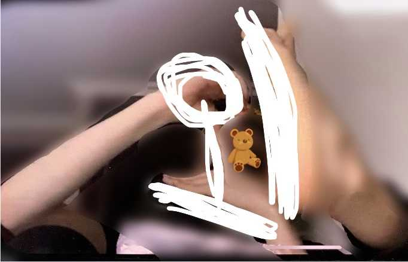

요즘은
일어나자마자 수업을 하니까
어느 정도 부을 수 밖에 없는데...
ㅋㅋㅋㅋㅋㅋㅋㅋㅋ
그럴 때 마다
이제 선생님께서
sarcastic 하게
" 슈퍼스타는 아침에도 빛이 나네 "
이러시거든요ㅋㅋㅋㅋㅋㅋㅋㅋㅋㅋㅋㅋㅋㅋㅋㅋㅋ
서로 sarcastic한 농담 많이 해가지구
이젠 익숙해요ㅋㅋㅋㅋㅋㅋㅋㅋㅋㅋㅋㅋㅋㅋㅋㅋㅋ
저 단어의 정확한 한국어 뜻은 모르겠지만 ㅋㅋㅋㅋ
그냥 약간 재치있게? 장난스럽게?ㅋㅋㅋㅋㅋㅋㅋ
어쩔 땐 밥 먹으면서 하기도 하고
아이스망고 먹고 있으면 ....
"슈퍼스타는 아침에 이슬
먹을 줄 알았는데 망고를 먹는 구나???????"
그럼 제가 수업 시작도 안했는데
" Sleep well. G.o.o.d.⤴️N.i.g.h.t.↘️ "
캐나다는 ㅋㅋㅋㅋㅋㅋㅋ밤 시간이니까
주무시라귴ㅋㅋㅋㅋㅋㅋㅋㅋ그러죠 ㅋㅋㅋㅋㅋㅋㅋㅋㅋ
참 편하고 다양하고 독특하고 좋아요 재밌어요
사실 이런 사진들은
보여드릴 수 있을 거 같은 사진들 이지만......
반대의 예를 살짝 보여드리자면
이제 제가 참외를 먹고 있었는데
선생님께서
어
침외 의
" '외' 자를 어떻게 썼더라? "
라고 하셔서
몸으로 설명을 하는 사진인데요
참 저도
왜 이럴까요
3
2
1

그럼 조금이나마 웃으셨길... 바라며👍🏻